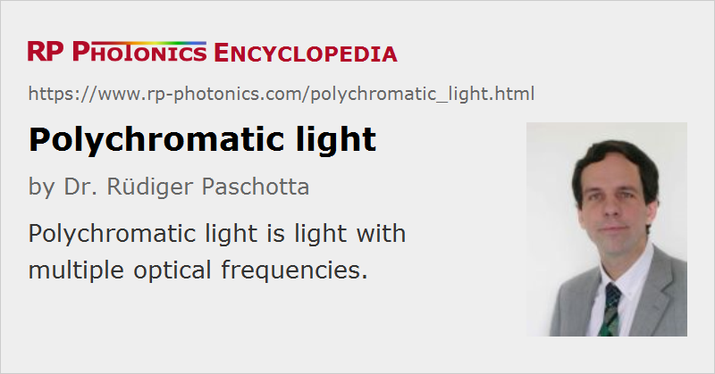

Polychromatic Light
Definition: light with multiple optical frequencies
Opposite term: monochromatic light
German: polychromatisches Licht
How to cite the article; suggest additional literature
Author: Dr. Rüdiger Paschotta
Light is called polychromatic when it has multiple optical frequencies, i.e., if it is not monochromatic. In some cases, polychromatic light has a mixture of some number of discrete wavelength components, while in other cases its optical spectrum is continuous.
Light may still be considered as quasi-monochromatic if its optical bandwidth is so small that the behavior of interest (for example, the light propagation properties) is not significantly different from that of monochromatic light. For example, diffraction patterns will not be significantly modified if the bandwidth is only a small fraction of the mean optical frequency.
In many cases of technical interest, light is substantially polychromatic, i.e., its optical bandwidth is not small compared with the mean frequency. For example, many optical imaging instruments work with light throughout the visible spectral region, which ranges about from 400 nm to 700 nm in terms of wavelength or 430 THz to 750 THz in terms of optical frequency. Therefore, chromatic aberrations may be substantial if an optical system (e.g. a photographic objective or a microscope) is not designed to well work with polychromatic light.
Typical technical sources of broadband (strongly polychromatic) light are incandescent lamps (including halogen lamps) and superluminescent sources.
Various types of calculations in optics are based on the assumption of monochromatic light. Sometimes one can use the results simply by calculating them for some suitable set of optical wavelengths and calculating average values from those, for example. In other cases, that is difficult, or the calculations inherently need to be done for polychromatic light.
Light pulses are inherently polychromatic, even if the instantaneous frequency is constant throughout the pulse. In case of ultrashort pulses, the minimum possible optical bandwidth can be many terahertz.
Questions and Comments from Users
Here you can submit questions and comments. As far as they get accepted by the author, they will appear above this paragraph together with the author’s answer. The author will decide on acceptance based on certain criteria. Essentially, the issue must be of sufficiently broad interest.
Please do not enter personal data here; we would otherwise delete it soon. (See also our privacy declaration.) If you wish to receive personal feedback or consultancy from the author, please contact him e.g. via e-mail.
By submitting the information, you give your consent to the potential publication of your inputs on our website according to our rules. (If you later retract your consent, we will delete those inputs.) As your inputs are first reviewed by the author, they may be published with some delay.
See also: monochromatic light, optical frequency, bandwidth
and other articles in the category general optics
|  |
If you like this page, please share the link with your friends and colleagues, e.g. via social media:
These sharing buttons are implemented in a privacy-friendly way!